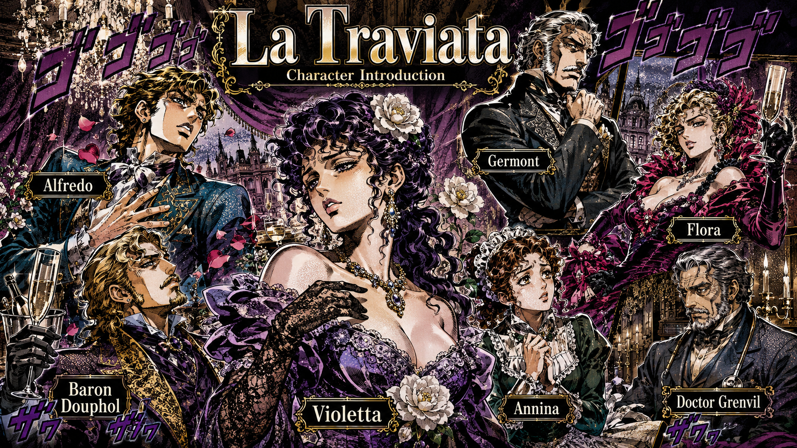
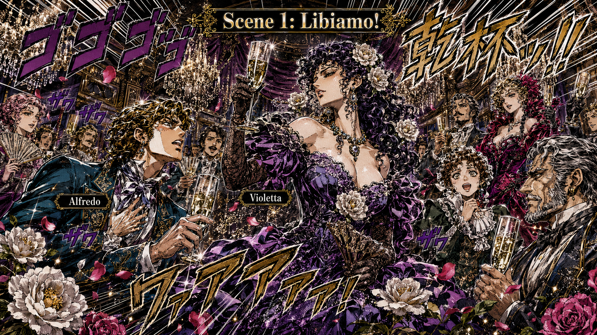
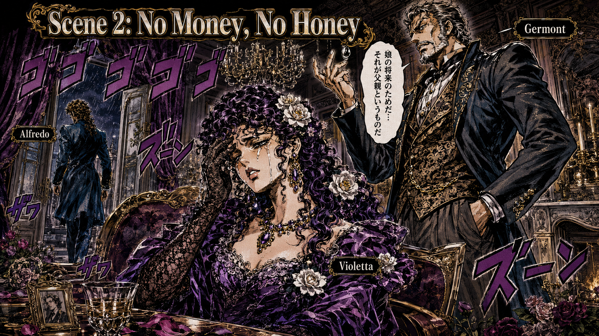
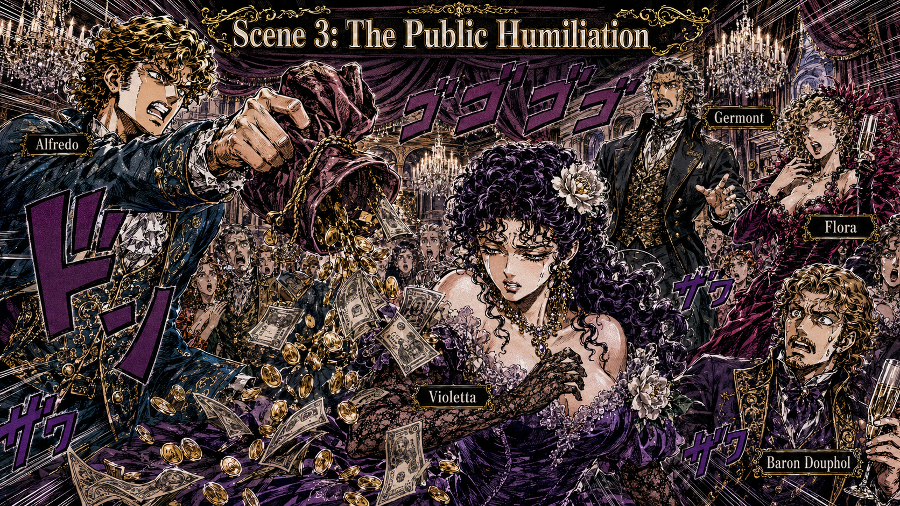

薇奧萊塔 Violetta
巴黎最高級的交際花，派對女王、時尚指標，也是「我在笑，但我的肺在痛」的代表人物。她不是不想愛，只是人生帳單太貴。
《茶花女》：巴黎派對女王、暈船富二代、情緒勒索老爸，以及歌劇史上最優雅也最不健康的肺結核美顏濾鏡。
各位看官，茶水補了嗎？瓜子還有嗎？
今天我們要講的這部戲，是歌劇界的催淚彈，威爾第的超級經典 《茶花女》La Traviata。如果說《鄉間騎士》是西西里版《角頭》，那《茶花女》就是十九世紀巴黎版的《麻雀變鳳凰》——只是結局不是變鳳凰，而是變成蝴蝶，飛走了，然後就真的走了。
這部戲也教導我們一個重要的歌劇醫學知識：在歌劇裡，肺結核是最強美顏濾鏡。只要得了這個病，角色就會臉色蒼白、楚楚可憐、唱歌特別好聽，而且高音照樣飛，完全不受肺活量限制。

巴黎最高級的交際花，派對女王、時尚指標，也是「我在笑，但我的肺在痛」的代表人物。她不是不想愛，只是人生帳單太貴。
年輕、熱血、富二代，暈船速度比香檳氣泡還快。一看到美女，智商就像劇院燈光一樣慢慢暗下去。
阿爾弗雷多的老爸，全劇最會說「我是為你好」的人。嘴上是家族榮譽，實際操作是高級情緒勒索。
巴黎社交圈好友，派對承辦能力一流。她的存在提醒我們：在巴黎，真正的災難通常都發生在豪華客廳裡。
薇奧萊塔身邊的有錢男爵。感情戲不一定最深，但帳戶餘額很有存在感。
安妮娜是忠心女僕，醫生是全劇最誠實但最沒辦法的人。他們都知道病情很糟，只是主角們忙著唱歌沒空面對。
故事開始在薇奧萊塔的豪宅派對。這裡香檳流得像塞納河，賓客笑得像不用付帳，大家都在用社交禮儀掩蓋人生空虛。
阿爾弗雷多一進門就盯著薇奧萊塔看，眼神像在看限量版球鞋。為了引起女神注意，他唱出全世界最紅的勸酒歌：《飲酒歌》Libiamo ne' lieti calici。
歌詞大意很簡單：「喝啦！哪次不喝！人生苦短，不及時行樂是不是傻？」薇奧萊塔心想：「這小鮮肉挺可愛的，但姐姐我是混江湖的，談戀愛傷錢又傷身。」
可是阿爾弗雷多死纏爛打，告白告到像在做年度業績簡報。薇奧萊塔終於動搖，唱出超難的花腔詠嘆調 《永遠自由》Sempre libera。

鏡頭轉到鄉下。薇奧萊塔和阿爾弗雷多私奔到郊外同居三個月。生活表面上很甜蜜，像田園戀愛實境秀；但問題是，浪漫不會自動繳房租。
阿爾弗雷多很快發現一件事：他們快破產了。更尷尬的是，這三個月其實都是薇奧萊塔在賣首飾養他。阿爾弗雷多這才驚覺自己不是浪漫男主角，而是高配版軟飯男。
他羞愧地衝回巴黎籌錢。偏偏就在他不在的時候，大魔王傑爾蒙老爸登場。
傑爾蒙對薇奧萊塔說：「小姐，我知道妳是好人，但妳的身分太……那個了。我女兒要結婚，對方家長說如果有個交際花嫂子，這婚就不結了。為了我女兒的幸福，請妳離開我兒子。」
薇奧萊塔哭著答應。她知道，如果直接說「我不愛你」，阿爾弗雷多會恨她，這樣他就能死心回家當乖寶寶。於是她留下分手信，回到巴黎，重新站回那個她原本想逃離的世界。

巴黎又有派對。社交圈的基本原則就是：就算人生毀了，晚宴還是要辦，賓客還是要來，八卦還是要傳。
阿爾弗雷多在派對上找到薇奧萊塔。他以為自己被拋棄、被羞辱、被當成提款卡。於是他當著所有賓客的面，把賭贏的一大袋錢丟在薇奧萊塔面前，大吼：「這些錢還妳！老子不欠妳了！這女人只認錢！」
全場瞬間安靜。薇奧萊塔崩潰。剛進門的傑爾蒙也看不下去，罵兒子：「你這樣羞辱一個女人，真的很沒品！」
這場戲堪稱歌劇史上的分手名場面：情緒、金錢、階級羞辱與父權道德，一次全部丟在客廳中央。

幾個月後，薇奧萊塔病重，躺在床上快撐不住。她的錢沒了，朋友散了，派對女王的世界退場後，只剩下醫生、女僕安妮娜，以及一間安靜得過分的房間。
阿爾弗雷多終於知道真相，因為傑爾蒙老爸良心發現，把所有事情告訴他。於是阿爾弗雷多衝回來求原諒。
兩人幻想未來美好的生活，彷彿只要重逢，一切就能重來。可是各位看官，這裡是歌劇，不是健康保險廣告。觀眾都知道，這是迴光返照。
薇奧萊塔突然站起來喊：「我不痛了！我復活了！我看見光了！」然後——倒地身亡。
說書人總結：《茶花女》教我們三件事
《La Traviata》提醒我們：巴黎可以很華麗，愛情可以很昂貴，但真正致命的，往往是那些打著道德旗號的溫柔刀。